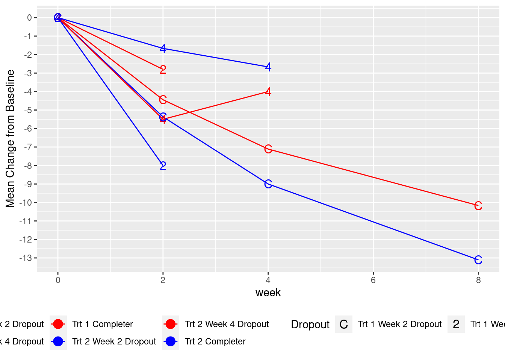

“Missing data are unobserved values that would be meaningful for analysis if observed; in other words, a missing value hides a meaningful value.”
We distinguish the following patterns of missingness:
Monotonic missingness/ dropout: All values by a subject after a certain time are missing. More specifically, if responses are missing at visit \(n \in \mathbb{N}\), then responses are also missing for every subsequent visit \(n + m\), for all \(m \in \mathbb{N}\). Example: Subject drop-out from the clinical study.
Intermittend missingness: Subjects miss one or several visits, but return for later visits. Example: A subject with data collected at baseline and Time 1 (Week 2), a missing value at Time 2 (Week 4) and a non-missing value at Time 3 (Week 8).
Note that, following the nomenclature introduced by (Roderick JA Little 2019), we use the term missing data pattern, to describe which data are missing in the data matrix of subject responses, and the term missing data mechanism, which describes the relationship between missing and observed values in the subject responses.
Our dataset contains a second variable chgdrop, which is subject to missingness. Let’s rerun our initial MMRM with chgdrop as dependent variable, baseline value, visit, baseline by visit interaction and treatment by visit interaction as fixed effects and an unstructured covariance matrix for visits within each subject.
This formulation is very similar to the one at the beginning of the former chapter. How do the results differ in terms of LS Means of change from baseline by treatment arm over time?
emmeans::emmeans(fit_cat_time, ~trt*avisit, weights ="proportional") %>%contrast(list("Difference in LS Means at Week 8"=c(0, 0, 0, 0, -1, 1),"Difference in longitudinal LS Means to Week 8"=c(-1, 1, -1, 1, -1, 1)/3 ) )
contrast estimate SE df t.ratio
Difference in LS Means at Week 8 -2.90 1.60 40.3 -1.814
Difference in longitudinal LS Means to Week 8 -2.06 1.23 46.8 -1.671
p.value
0.0772
0.1014
To understand the nature of the differences between the model using change as a response variable and the one with chgdrop, we need to look closer into the extent of missing data and understand its nature.
Missing Data Mechanisms
To understand the nature of missing data in our clinical trial, we consider the following taxonomy, introduced by (Roderick JA Little 2019). We differentiate between the following three types of missing data:
Missing Completely at Random (MCAR): Conditional on all covariates in our analysis, the probability of missingness does not depend on either observed or unobserved values of the response variable.
Missing at Random (MAR): Conditional on all covariates and observed response values in our analysis, the probability of missingness does not depend on the unobserved values of the response variable.
Missing not at Random (MNAR): Conditional on all covariates and observed response values in our analysis, the probability of missingness does depend on the unobserved values of the response variable.
“With MCAR, the outcome variable is not related to the probability of dropout (after taking into account covariates). In MAR, the observed values of the outcome variable are related to the probability of dropout, but the unobserved outcomes are not (after taking into account covariates and observed outcomes). In MNAR the unobserved outcomes are related to the probability of dropout even after the observed outcomes and covariates have been taken into account.”
The following two sections outline handling strategies for missing data. However, the best approach to handle missing data is to minimise its extent. While the occurence of missing data can rarely be avoided at all (think about the collection of questionnaire data in oncology studies and the missing data after subjects die), it is important to pursue an “as complete as can be” data collection.
Baseline and screening data are of utmost importance in a pursuit of data completeness. If a screening value is missing, but was meant to be used as a covariate, this subjects’ whole data will be dropped from the analysis even if all responses were observed. If the baseline response variable was missing we are unable to compute a change from baseline, which also leads to the loss of this subjects’ data in the model (although LDA models are still able to provide an estimate) even if all post-baseline values were observed.
Missing data handling I (descriptive stats + visualisations)
To gain an understanding of the impact of missingness on the average response trajectories, we can plot the mean changes from baseline by visit for each drop-out group. The three drop-out groups (variable dropout_grp) are:
Drop-outs at Week 2: Subjects who completed baseline and Week 2, but discontinued from the study prior to Week 4.
Drop-outs at Week 4: Subjects who completed baseline, Week 2 and Week 4, but discontinued from the study prior to Week 8.
Completers: Subjects who completed all visits in the study.

Exercise: Try to interpret the plot above and discuss the following topics around missingness:
Look into the data. Which missing data pattern is present in this dataset?
What can be seen in the plot? How does the drop-out time affect the observed mean response trajectories?
What other aspects, apart from response, could influence a subjects’ likelihood to drop-out from the study?
Which other summaries/ visualizations can be useful to characterize and monitor the degree of missingness in clinical study data?
Solution: A look into the data shows that all missing values stem from a monotinic missingness pattern.
The figure above shows a notable difference between mean response trajectories per drop-out group. The completers in both treatment arms show a steady decrease of HAMD17 scores over time, which is equivalent to an increase in depression symptoms.
Week 4 drop-outs under treatment 2 only showed a moderate change from baseline, while the treatment 1 subjects experienced an increase in HAMD17 scores. A possible explanation could be that changes under treatment 2 were not regarded meaningful by patients, while the increase in scores under treatment 1 made subjects drop out of the study.
Week 2 drop-outs under treatment 2 showed notable improvements of HAMD17 scores compared to treatment 1, yet the drop-out could potentially be linked to the occurrence of adverse events.
Although the extent of missing data should be reduced to the bare minimum, it can never be avoided completely, especially with Patient-Reported Outcomes (PRO) data. In the reporting of PRO clinical trial data, it is therefore important to transparently summarize the extent of missingness. This is usually done via so-called compliance tables.
Compliance tables summarize three key components to characterize missingness in our data:
The number of subjects initially randomized in the trial.
The number of subjects for whom data is expected. This is the number of patients who are still ongoing in the study (alive and not discontinued) and for whom an assessment is scheduled following the schedule of assessments in the clinical trial protocol.
The number of subjects by whom the assessment has been completed.
From these numbers, we can derive the available data rate and the compliance for visit \(i\) as follows:
\[
\begin{aligned}
\text{Available Data Rate}_{\,i} &:= 100\,\frac{\#\{\text{Subj. with assessment i completed}\}}{\#\{\text{Subj. randomized}\}}\,,\\
\text{Compliance Rate}_{\,i} &:= 100\,\frac{\#\{\text{Subj. with assessment i completed}\}}{\#\{\text{Subj. assessment i expected}\}}\,.
\end{aligned}
\] The available data rate indicates the degree of missingness due to drop-outs or deaths from the study. It shows how many of the initially randomized patients are still ongoing at a certain visit.
The compliance rate indicates the degree of missingness due to skipped assessments by patients, who are still ongoing in the study and expected to provide their measurement.
One can summarize compliance and available data rate by means of a table or stacked bar charts with study visits on the x-axis and percentage of patients with measurements at the respective visit, drop-out, skipped assessments, death etc. on the y-axis.
Missing data handling II (naive analytic approaches)
This section provides an overview of simple and most of the times overly naive methods to deal with missing data. Although we will introduce more suitable methods in the next chapter, the approaches introduced in this section have gained questionable popularity in the past, which is why we introduce them here. The following methods to compute or completely ignore missing data exist:
Complete Case Analysis: Discard all subjects with missing observations and only conduct the analysis on subjects with complete follow-up data.
Last observation carried forward (LOCF): Handling of monotonic missing data. The missing visits are imputed with the last non-missing value. This approach assumes a constant trend of observations after drop-out from the study, i.e. the response level remains the same as the last response under the study drug.
Baseline observation carried forward (BOCF): Handling of monotonic missing data. The missing visits are imputed with the baseline value. This approach assumes that subjects’ symptom severity or functioning (whichever was measured in the study) bounce back to the baseline state, prior to the intiation of the study drug.
Complete Case Analyses
Let us run a complete case analysis on the all2 dataset.
Exercise: Fit an MMRM with response variable chgdrop, with baseline severity, treatment and visit as fixed effects, as well as baseline-by-visit and treatment-by-visit interaction, using an unstructured variance-covariance matrix on the all2 completers.
How do the results differ from the results obtained in the former chapter (response variable change, no missing data)?
How do the results differ from the results obtained at the beginning of this chapter (response variable chgdrop with missing data)?
Discuss the limitations of the complete case analysis. Which sources of bias can you identify?
Solution:
We firstly select our completers dataset. As this is a filtering exercise based on post-baseline characteristics, we first look into the distribution of subjects per treatment arm (note that we lost our randomization effect):
# A tibble: 2 × 2
group N
<fct> <int>
1 Arm 1 18
2 Arm 2 19
In this case, we are left with 18 and 19 subjects per arm, which reduced our sample size notably, but at least left us with close to equal sizes of our treatment groups. This is not normal. Usually the stratification of data based on post-baseline assessments can lead to imbalances (it might still have, as we only checked the distribution of the treatment arms).
emmeans::emmeans(fit_cat_time_compl, ~trt*avisit, weights ="proportional") %>%contrast(list("Difference in LS Means at Week 8"=c(0, 0, 0, 0, -1, 1),"Difference in longitudinal LS Means to Week 8"=c(-1, 1, -1, 1, -1, 1)/3 ) )
contrast estimate SE df t.ratio p.value
Difference in LS Means at Week 8 -2.93 1.69 34 -1.733 0.0922
Difference in longitudinal LS Means to Week 8 -2.07 1.42 34 -1.455 0.1548
A comparison to the results using the full response trajectories for all randomized subjects (response variable change) yields:
emmeans::emmeans(fit_cat_time, ~trt*avisit, weights ="proportional") %>%contrast(list("Difference in LS Means at Week 8"=c(0, 0, 0, 0, -1, 1),"Difference in longitudinal LS Means to Week 8"=c(-1, 1, -1, 1, -1, 1)/3 ) )
contrast estimate SE df t.ratio p.value
Difference in LS Means at Week 8 -3.39 1.46 47 -2.319 0.0248
Difference in longitudinal LS Means to Week 8 -2.19 1.18 47 -1.850 0.0705
We can see that the mean change from baseline to Week 8 using the complete response trajectory is actually lower (i.e. better) under Treatment 2 than the ones from the complete case analysis. For Treatment 1 the mean change from baseline to Week 8 is a little higher (i.e. worse) for the complete response trajectory on all randomized subjects as compared to the complete case analysis. A possible explanation could be that the favorable treatment effect of Treatment 2 came at the cost of adverse events, which made subjects drop out from the study, while the lack of early efficacy under Treatment 1 made subjects drop out, which lead them to not experience the favorable effects in the longer term.
A comparison to the analysis results based on the incomplete response trajectory (data as is), yields:
### Response data as is (including missings)fit_cat_time <- mmrm::mmrm(formula = chgdrop ~ basval*avisit + trt*avisit +us(avisit | subject),data = all2,control =mmrm_control(method ="Kenward-Roger"))emmeans::emmeans(fit_cat_time, ~trt*avisit, weights ="proportional")
emmeans::emmeans(fit_cat_time, ~trt*avisit, weights ="proportional") %>%contrast(list("Difference in LS Means at Week 8"=c(0, 0, 0, 0, -1, 1),"Difference in longitudinal LS Means to Week 8"=c(-1, 1, -1, 1, -1, 1)/3 ) )
contrast estimate SE df t.ratio
Difference in LS Means at Week 8 -2.90 1.60 40.3 -1.814
Difference in longitudinal LS Means to Week 8 -2.06 1.23 46.8 -1.671
p.value
0.0772
0.1014
We can see that mean changes from baseline to Week 8 are higher (i.e. worse) under both treatment arms using the data as is, as compared to the complete case analysis. In this case, the complete case analysis overestimates the treatment effect in both arms. This effect is often observed with complete case analyses, due to the inherent selection bias that arises from the inclusion of completers only.
Discussion
Complete Case Analysis is subject to selection bias, as the analysis is only conducted on subjects who complete the study and therefore did not drop out due to the experience of adverse events of the lack of efficacy. Selection of subjects based on post-baseline events can lead to notable imbalances between our treatment arms and the distribution of covariates. Results from the Complete Case Analysis can therefore be hard to interpret (due to the loss of randomization), and are frequently overestimating the true treatment effect.
Roderick JA Little, Donald B. Rubin. 2019. Statistical Analysis with Missing Data. Vol. 3. USA: New York, Wiley. https://doi.org/10.1002/9781119482260.